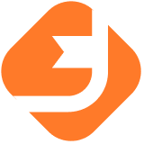
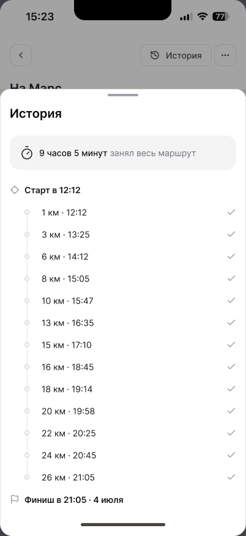
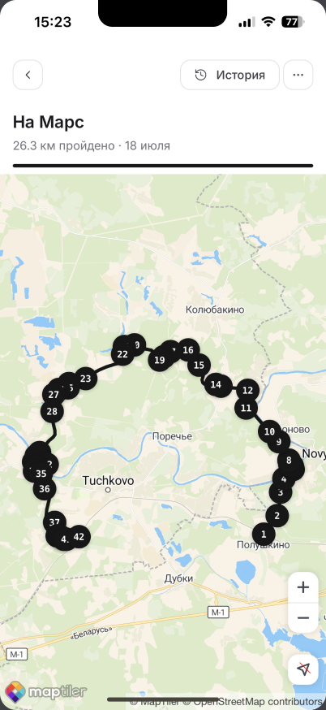
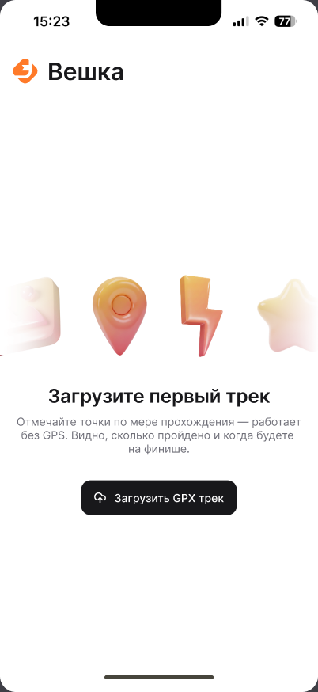
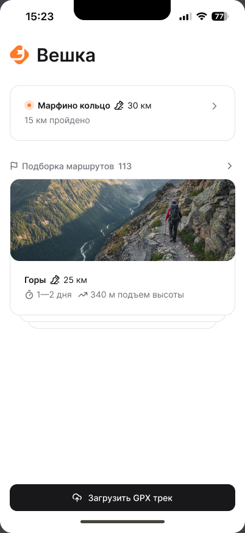
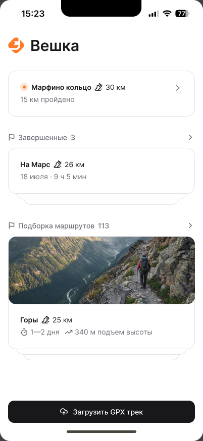

Мобильное веб-приложение для пеших маршрутов: загрузи GPX-трек, отмечай контрольные точки и знай, сколько ещё идти — даже без GPS и интернета.
Проблема
Туристы теряются не потому, что нет карты — а потому что непонятно, где ты на маршруте, сколько прошёл и успеешь ли до темноты.
Решение
Вешка — это не навигатор. Это инструмент самоконтроля: туристы сами отмечают пройденные точки, а приложение рассчитывает прогресс и прогноз финиша.


Интерфейс

Стартовый
Главная
ЗавершённыеВозможности
Аудитория
Приложение создано для всех, кто ходит по размеченным или авторским маршрутам — в одиночку и группами.
Технологии и статус
Современный стек, строгая архитектура, ноль зависимости от бэкенда.
Этапы разработки
Простой, надёжный инструмент для туристов, который работает там, где другие приложения сдаются.